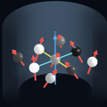
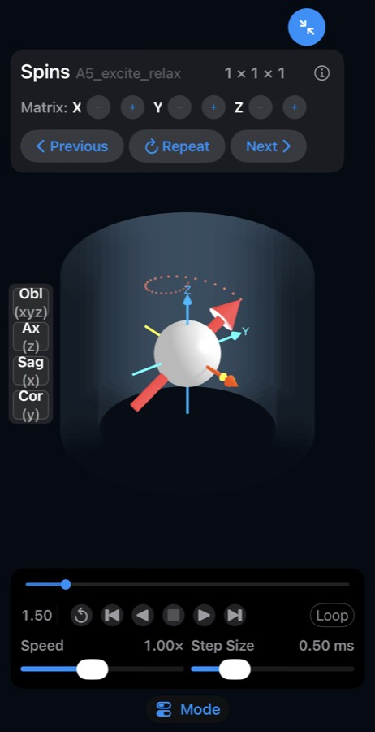
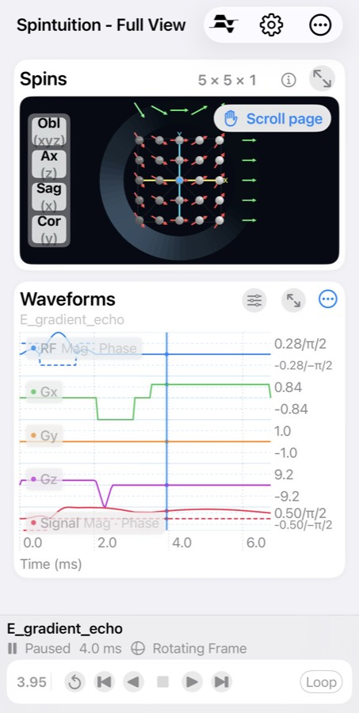

ExamplesSpintuition ships with a progression of example sequences, from basic MR physics to complete imaging sequences.
Choose Basic Examples on the welcome screen to step through the A-series in the expanded Spins view, using Previous, Repeat and Next. Any example can also be loaded from the Sequences library (the sequence icon at the top of the Full View), where the RF and gradient waveforms are shown alongside the spins.
Every example is actually a standard Pulseq .seq file generated by a MATLAB script.
Although these may change with versions, a typical list of examples is given below.
Simmr directives within the.seq file set
the spin matrix, relaxation and view.

A — Basic physics
| Example | Matrix | What it shows |
|---|---|---|
| A Polarization | 1×1×1 | In a magnetic field B0, protons align with an excess in one direction — the magnetization, loosely called “spins”, which act as small dipoles. |
| A0 Excitation | 1×1×1 | An RF pulse tips the spin from z into the transverse plane (here along x), where it generates a signal. |
| A1 Precession | 1×1×1 | Magnetization precesses about z in the lab frame, inducing the MRI signal in a receive coil. Toggle the lab frame off to see the simpler rotating frame. |
| A2 x Gradient | 5×1×1 | With Gx on, spins rotate at different rates depending on x position. With Phase Gray shading the gray levels track phase. |
| A3 x Gradient (2D) | 5×5×1 | The same gradient in 2D: all spins along y at one x location rotate at the same rate. |
| A4 y Gradient (2D) | 5×5×1 | A Gy gradient, so the phase variation is now along y. |
| A5 Excitation/Relaxation | 1×1×1 | T2 decay of the transverse magnetization and T1 recovery of the longitudinal magnetization. |
| A6 Selective Excitation | 3×1×7 | With a z gradient only on-resonance spins are excited; a refocusing gradient realigns them. |
| A7 Complete | 3×1×7 | End of the basic series — move on to the Full View to see the RF and gradient waveforms. |
B — Image encoding
Intuition for how images are encoded with gradient-induced phase. Best viewed in the Full View so the waveforms are visible.
| Example | Matrix | What it shows |
|---|---|---|
| B1 2×1 Encoding | 2×1×1 | Two spins A and B: the signal is A+B at the start of the readout and i(A−B) at the end, so both amplitudes can be recovered. |
| B2 2×2 Encoding | 2×2×1 | Four spins encoded as A+B+C+D, i(A−B+C−D), i(A+B−C−D) and A−B−C+D — a 2×2 Fourier transform. |
| B3 5×5 Encoding | 5×5×1 | A real 5×5 imaging sequence, pausing at each of the 25 samples so you can see the spin configuration. A 5×5 FFT would reconstruct the image. |
C — Excitation and RF
| Example | Matrix | What it shows |
|---|---|---|
| C1 Simple Selective Excitation | 3×1×3 | Two 45° tips with a gradient in between: spins at z=0 tip 90° while off-axis spins do not. |
| C2 Sinc Excitation | 3×1×7 | A sinc RF pulse excites a clean slice, followed by a refocusing gradient. Try increasing the z matrix. |
| C3 Spin Echo | 3×1×5 | A 90° excitation, repeatable dephasing, then a 180° refocusing pulse that brings the spins back into a spin echo. |
| C4 Inversion | 1×1×1 | A 180° pulse inverts the magnetization; at ~0.7·T1 it passes through zero (the null point used to suppress a tissue). |
| C5 RF Phase | 1×1×1 | Five 90° pulses with phases 0°, 90°, 180°, 30° and 60° show how RF phase sets the rotation axis. |
D — Scaling
| Example | Matrix | What it shows |
|---|---|---|
| D Scaling | 5×1×5 | A realistic 25 cm FOV, 1 mm, 1 ms readout, 2 mm slice sequence scaled by 4/250, so 4 cycles accrue across the FOV and the slice becomes ~120 mm. |
E — Advanced sequences
| Example | Matrix | What it shows |
|---|---|---|
| Gradient Echo | 5×1×5 | Excitation followed by a standard gradient echo. (Provided in matlab_pulseq/; load it as a .seq file.) |
| EPI | 10×10×1 | A 90° excitation followed by an echo-planar readout; the readout alternates every 2 ms and Gy blips step through 10 k-space lines. |
| Spiral | 10×10×1 | Gx and Gy oscillate together so k-space is covered by a spiral from the center outward, in one shot. |
| CPMG | 5×5×1 | A 90° followed by a train of refocusing pulses (150°, then 120°) every 5 ms with Cartesian readouts. |
| Balanced SSFP | 1×1×3 | From equilibrium, spins excite, precess and relax toward a repeating steady state. |
